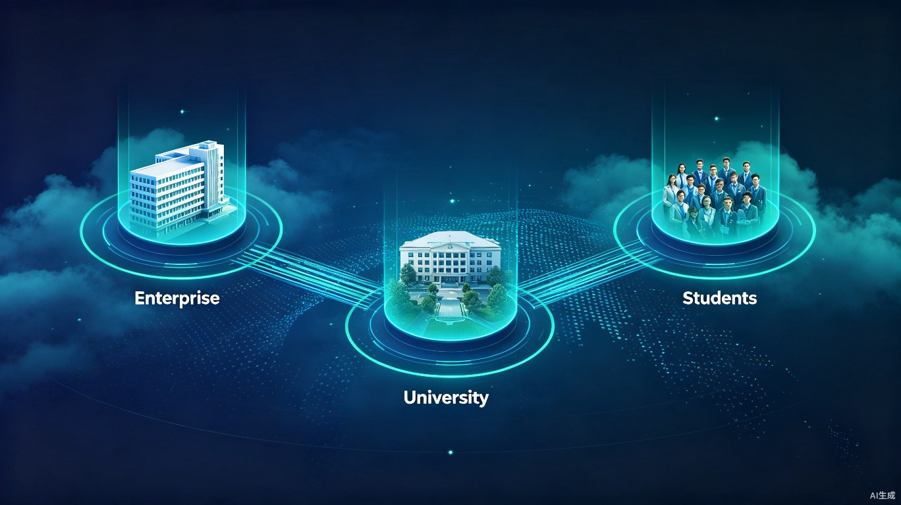
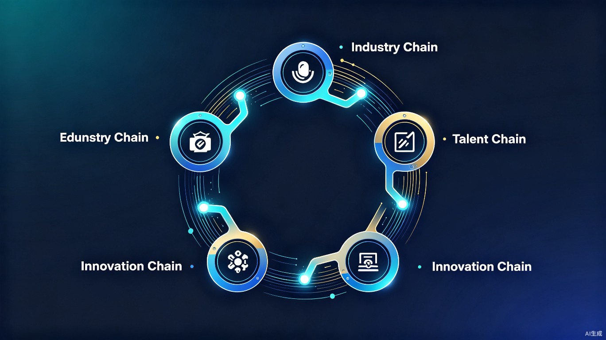
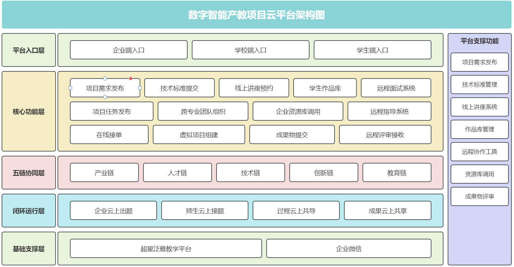

将实体产业学院功能全面线上化，实现高校、企业、学生三方高效协同
基于超星泛雅一体化教学平台与企业微信，将实体产业学院的功能全面迁移至云端，打破时空限制，实现随时随地协同工作。
构建"产业链→人才链→技术链→创新链→教育链"五链深度融合的协同机制，形成教育赋能产业、产业反哺教育的良性循环。
企业出题、师生接题、过程共导、成果共享，四个环节形成完整闭环，确保每个项目从需求到落地的高效运转。
产业链、人才链、技术链、创新链、教育链深度融合，构建产教融合新生态

企业发布真实产业需求，将生产实践中的技术难题转化为教学项目，实现产业需求与教育供给精准对接。
学生通过参与真实项目培养实践能力，企业提前锁定优秀人才，形成"培养-选拔-就业"一体化人才输送通道。
将企业前沿技术引入教学过程，师生掌握最新行业技术动态，推动技术知识从产业向教育双向流动。
鼓励师生围绕企业需求开展技术创新，项目成果可直接应用于企业生产，实现创新价值的快速转化。
以真实项目为载体重构教学内容与方法，推动课程体系与产业需求同步更新，提升人才培养质量。
四个关键环节形成完整闭环，确保项目高效运转
企业登录平台发布真实项目需求，明确技术标准和交付要求
学生组建跨专业团队，在线提交项目立项书，教师审核指导
企业导师远程审阅进度、直播答疑，学校教师全程跟踪指导
项目成果上传平台，企业下载用于商业推广，实现价值共享
泰山文旅集团"泰山石刻数字化保护"项目

泰山文旅集团通过平台发布"泰山石刻数字化保护"需求，师生团队组建跨专业项目组在线提交立项书，企业导师远程审阅进度、直播答疑，最终项目成果上传平台供企业下载用于商业推广。